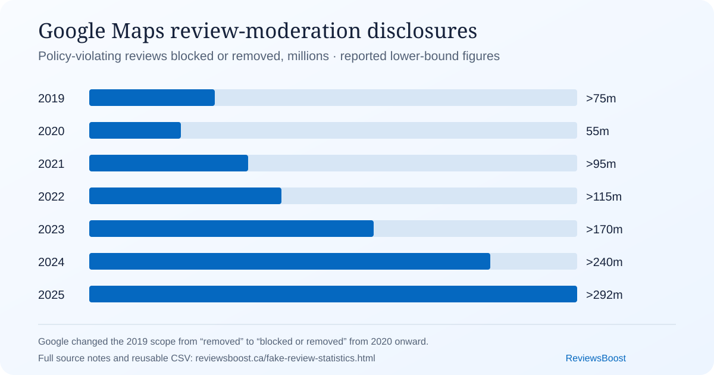

Google says it blocked or removed more than 292 million policy-violating reviews in 2025. Tripadvisor identified 2.7 million fraudulent reviews in 2024, while Trustpilot removed 4.5 million fake reviews that year. Those are not estimates of the same thing. They describe different platforms, detection systems, policies and stages of moderation.
Fake review statistics at a glance
The table below uses the terminology chosen by each source. “Blocked,” “removed,” “fraudulent,” “fake” and “policy-violating” are not interchangeable. A platform may block a submission before publication, remove it later, or classify it under a broader policy category.
| Source | Period | Published figure | What it measures |
|---|---|---|---|
| Google Maps | 2025 | More than 292 million | Policy-violating reviews blocked or removed globally |
| Google Maps | 2024 | More than 240 million | Policy-violating reviews blocked or removed globally |
| Tripadvisor | 2024 | 2.7 million | Fraudulent reviews detected from 31.1 million submitted |
| Trustpilot | 2024 | 4.5 million | Fake reviews removed; reported as 7.4% of submissions |
| Amazon | 2023 | More than 267 million | Suspected fake reviews proactively blocked globally |
| Tripadvisor | 2024 | 214,000 | AI-generated reviews flagged and removed |
Download the source data
Both datasets are reusable, independently checkable and accompanied by W3C CSV on the Web metadata describing every column:
- Cross-platform disclosure table (CSV) · column metadata (JSON)
- Google Maps 2019–2025 moderation series (CSV) · column metadata (JSON)
ReviewsBoost's compilation, notes and original calculations are available under CC BY 4.0. Source facts remain attributable to their original publishers.
How to cite or reuse the dataset
Suggested citation: ReviewsBoost Editorial Team (2026), Google Maps Policy-Violating Review Moderation Disclosures, 2019–2025, version 1.0, ReviewsBoost, CC BY 4.0.
Reference-manager files: Citation File Format (CFF) · BibTeX. Please preserve the dataset title, version, URL and access date when reusing the data.
Seven years of Google Maps review moderation disclosures
We located a comparable annual figure in seven consecutive Google publications. The series begins with more than 75 million policy-violating reviews removed in 2019 and reaches more than 292 million reviews blocked or removed in 2025. Google's wording changed from “removed” to “blocked or removed,” so the source label is retained for every row.
{kind=link}

Bar lengths use the printed rounded values. Qualifiers and source definitions are preserved in the downloadable dataset. Open the chart image for a shareable, full-size version.
Adding the seven printed annual values produces 1.042 billion review moderation actions. Because six figures are stated as “more than” or “over,” the disclosed total is more than roughly 1.04 billion actions. This is not a count of unique reviews, confirmed fake reviews or affected businesses.
The 2025 endpoint is about 3.9 times the printed 2019 value. That does not prove review fraud became 3.9 times more common. Google has changed its detection technology, preventative blocking and policy enforcement, while review volume and world events also changed. Google specifically attributed the drop from 2019 to 2020 partly to reduced review activity during COVID-19.
How many reviews does Google block or remove?
In April 2026, Google reported that its systems and analysts had blocked or removed more than 292 million policy-violating reviews during 2025. Google's Maps Content Trust and Safety Report separately lists 1.14 billion local reviews published in 2025. The announcement also reported 79 million inaccurate or unverified profile edits blocked, restrictions on more than 782,000 policy-violating accounts, and more than 13 million fake Business Profiles removed.
The prior annual disclosure said Google blocked or removed more than 240 million policy-violating reviews in 2024, with the vast majority stopped before people saw them. It also reported more than 70 million policy-violating place edits blocked or removed, more than 12 million fake Business Profiles blocked or removed, and restrictions on more than 900,000 repeatedly violating accounts.
A defensible per-day calculation
Dividing Google's printed lower-bound figures by the number of days in each year gives approximately 800,000 review interventions per day in 2025 and 656,000 per day in leap-year 2024. These are ReviewsBoost calculations, not daily figures published by Google. Because Google says “more than” and combines blocked with removed reviews, the results are approximate scale indicators—not exact daily takedown counts.
The published thresholds differ by 52 million, a nominal 21.7% increase when calculated from 240 million and 292 million. The true percentage change cannot be recovered from two rounded lower bounds, and a larger count could reflect more submissions, better detection, changed policy coverage, more abuse or some combination of those factors.
Google's 1.14-billion figure describes local reviews published, while 292 million combines content blocked before publication and content removed later across all review-policy violations. Dividing one by the other would create a misleading rate with mismatched categories and an incomplete denominator.
What Tripadvisor, Trustpilot and Amazon disclose
Tripadvisor: 2.7 million fraudulent reviews in 2024
Tripadvisor reported 31.1 million review submissions in 2024 and said it safeguarded travellers from 2.7 million fraudulent reviews. Dividing those rounded figures gives approximately 8.7%. That calculation is a Tripadvisor-specific submission ratio, not evidence that 8.7% of all online reviews or businesses are fraudulent.
Its disclosure is unusually detailed: 54% of detected review fraud was categorized as “review boosting”; around 9,000 businesses received warnings for incentivized reviews; 360,000 removed reviews were linked to employee incentive programs; and 214,000 AI-generated reviews were flagged and removed. Tripadvisor also said business owners posted more than 11 million responses during 2024.
Trustpilot: 4.5 million removals, 90% automated
Trustpilot reported removing 4.5 million fake reviews in 2024, representing 7.4% of submissions. It said 90% of those removals were automatic. Multiplying the two rounded disclosures gives about 4.05 million automatically removed fake reviews. Trustpilot also reported 61 million reviews published, 92,000 reviews flagged by consumers and 601,000 flagged by businesses during the year.
Amazon: more than 267 million suspected submissions blocked
Amazon's 2024 European Union risk assessment said the company proactively blocked more than 267 million suspected fake reviews from its global stores in 2023. The same report said 237 million customers contributed more than one billion reviews and ratings that year. “Suspected,” “proactively blocked” and the combined “reviews and ratings” volume make this figure unsuitable for direct comparison with Tripadvisor's detected-fraud ratio or Trustpilot's removal percentage.
Do one in five businesses buy reviews or deletions?
We did not find a credible, representative source supporting the claim that one in five businesses buys reviews, or that one in five buys review deletion. Publishing that sentence as a fact would confuse three different populations: reviews, business listings and businesses that purchase manipulation services.
Platform enforcement totals show that manipulation operates at large scale, but they do not reveal how many unique businesses paid for it. One business can be connected with many submissions; one submission can trigger multiple enforcement actions; some interventions concern policy problems other than fake engagement; and prevention systems may assess content that never appears publicly.
Nor is there a reliable public count of businesses paying to delete reviews. Google has described scams that demand payment in exchange for removing fake one-star reviews, but its 2025 announcement does not give a prevalence rate. The evidence supports saying that such scams exist, not assigning them an invented percentage.
What research says about consumer impact
A 2023 National Bureau of Economic Research working paper by Jesper Akesson, Robert Hahn, Robert Metcalfe and Manuel Monti-Nussbaum studied 10,000 UK participants on a shopping platform designed to resemble Amazon. Participants exposed to positive fake reviews were more likely to choose an inferior product. The authors estimated a welfare loss of about US$0.12 per dollar spent in that experimental setting.
That 12-cent estimate is noteworthy but narrow. It is not a finding that fake reviews remove 12% of revenue, raise every consumer's costs by 12%, or cause the same harm in local services. The population, product set, platform design and treatments define what can reasonably be inferred. The careful wording—“in the setting we study”—is part of the result.
What enforcement data shows
Canada: undisclosed employee reviews can create liability
In 2015, the Competition Bureau reached an agreement with Bell Canada after employees were encouraged to post positive app-store reviews and ratings without disclosing their employment. The Bureau said the reviews gave the general impression of independent, impartial consumer opinions and temporarily affected the apps' ratings. Bell agreed to strengthen its compliance program and pay a CA$1.25 million administrative monetary penalty.
In a 2024 warning, the Bureau said employees reviewing their employer or its competitors must disclose all business connections, even when their opinion is honest. It recommended employee training plus a compliance and monitoring program. This is Canadian regulatory guidance, not a claim that every employee review is illegal or fake.
United States: a rule expressly covers buying and selling
The US Federal Trade Commission's Consumer Reviews and Testimonials Rule took effect on October 21, 2024. Among other conduct, it addresses the creation or sale of fake reviews, the knowing purchase or dissemination of fake reviews, incentives conditioned on positive or negative sentiment, certain undisclosed insider reviews, review suppression and misrepresented company-controlled review sites. Businesses operating in the United States should read the rule and current FTC guidance rather than rely on summaries.
United Kingdom: compliance review is not proof of purchasing
In 2025, the UK Competition and Markets Authority reviewed more than 100 business websites for visible policies addressing fake and incentivized reviews. It said 54 could be failing its guidance because policies were missing, unclear, incomplete or inaccessible. In March 2026, the CMA opened investigations into five businesses concerning online-review practices. An investigation is not a finding of wrongdoing, and the 54-business result is not evidence that 54% of all businesses buy fake reviews.
Methodology and limitations
- Source selection. We prioritized first-party platform transparency disclosures, regulator pages and an identifiable research paper over unsourced marketing roundups.
- Cut-off date. Sources and links were checked through September 4, 2026. A figure's reporting year is preserved even when the source was published later.
- Terminology. We retain source labels such as “policy-violating,” “fraudulent,” “fake” and “suspected fake.”
- Calculations. Every calculation is labelled as ours, rounded sensibly and reproducible from the adjacent published values.
- Company-reported data. Platform figures are the companies' own disclosures. We have not independently audited their detection models, false-positive rates or private underlying data.
- Machine-readable metadata. The downloadable tables include W3C CSVW column metadata. Dataset JSON-LD identifies creators, provenance, variables, temporal coverage, licences and distributions.
- No pooled prevalence rate. Differing platforms, policies, periods, units and moderation stages prevent a defensible combined percentage.
To report an error or a newer primary disclosure, email support@reviewsboost.ca. Material corrections will be reflected in the visible date and the downloadable source table.
Primary sources
- Google: 2025 Maps review and Business Profile protections
- Google: 2024 Maps enforcement figures
- Google: 2023 Maps enforcement figures
- Google: 2022 Maps enforcement figures
- Google: 2021 Maps enforcement figures
- Google: 2020 Maps enforcement figures
- Google: 2019 Maps enforcement figures
- Google Maps Content Trust and Safety Report
- Tripadvisor: 2025 Transparency Report summary
- Trustpilot: 2025 Trust Report announcement
- Amazon: 2024 EU Digital Services Act risk assessment
- NBER Working Paper 31836: The Impact of Fake Reviews on Demand and Welfare
- Competition Bureau Canada: Bell online-review agreement
- Competition Bureau Canada: employee-review warning
- US FTC: Consumer Reviews and Testimonials Rule Q&A
- UK CMA: online consumer reviews case page